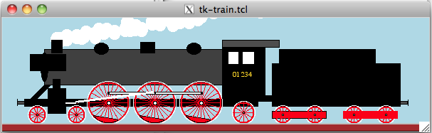

Example by <Richard Suchenwirth> http://wiki.tcl.tk/1329
-
translated from Tcl to XOTcl by gustaf neumann in 2001
-
translated from XOTcl to NX by gustaf neumann in 2010

Left mousebutton starts, middle slows down, right stops
package require Tk package require nx nx::Class create Wheel { :property x :property y :property r :property {spokes 24} :property {pivot 0} :property {color red} :property {tag ""} :public method drawSpokes {} { ::nx::var import [:info parent] c alpha set delta [expr {360.0 / ${:spokes}}] set deg2arc [expr {atan(1.0)*8/360.}] for {set i 0} {$i < ${:spokes}} {incr i} { set x1 [expr {${:x} + cos($deg2arc*$alpha) * ${:r}}] set y1 [expr {${:y} + sin($deg2arc*$alpha) * ${:r}}] $c create line ${:x} ${:y} $x1 $y1 -fill ${:color} -tag spoke set alpha [expr {$alpha + $delta}] } if {[info exists :act_pivot]} { lassign [set :act_pivot] item perc set rp [expr {${:r} * $perc}] set xp [expr {${:x} - $rp * cos($deg2arc * $alpha)}] set yp [expr {${:y} - $rp * sin($deg2arc * $alpha)}] $c coords $item $xp $yp [expr {$xp + 1}] [expr {$yp + 1}] } } :method init {} { ::nx::var import [:info parent] c alpha set alpha 0. set :y [expr {${:y} - ${:r}}] $c create oval \ [expr {${:x} - ${:r}}] [expr {${:y} - ${:r}}] \ [expr {${:x} + ${:r}}] [expr {${:y} + ${:r}}] \ -outline white set r1 [expr {${:r}-2}] set W [$c create oval \ [expr {${:x} - $r1}] [expr {${:y} - $r1}] \ [expr {${:x} + $r1}] [expr {${:y} + $r1}] \ -outline ${:color} -width 2] :drawSpokes if {${:pivot}} { set deg2arc [expr {atan(1.0) * 8 / 360.0}] set rp [expr {$r1*${:pivot}}] set xp [expr {${:x} - $rp * cos($deg2arc * $alpha)}] set yp [expr {${:y} - $rp * sin($deg2arc * $alpha)}] set new_pivot [$c create rect $xp $yp [expr {$xp + 1}] [expr {$yp + 1}] \ -fill ${:color} -tag [list ${:tag} pivot]] set :act_pivot [list $new_pivot ${:pivot}] $c create arc [expr {${:x} - $r1}] [expr {${:y} - $r1}]\ [expr {${:x} + $r1}] [expr {${:y} + $r1}] \ -style chord -fill ${:color} -start 310 \ -extent 80 -tag counterweight set :pivot $new_pivot } set rh [expr {${:r} / 12.0}] $c create oval \ [expr {${:x} - $rh}] [expr {${:y} - $rh}] \ [expr {${:x} + $rh}] [expr {${:y} + $rh}] \ -fill white -tag hub set :r $r1 } } nx::Class create Locomotive { :property {speed 4} :method turn {} { set :alpha [expr {round(${:alpha} + 360 - ${:speed}) % 360}] foreach i [${:c} find withtag counterweight] { ${:c} itemconfig $i -start [expr {310 - ${:alpha}}] } ${:c} delete spoke foreach wheel [:info children] { $wheel drawSpokes } ${:c} raise hub set xp0 [expr {105 + 15 * sin((${:alpha} - 90) * atan(1.0) * 8 / 360)}] ${:c} delete piston ${:c} coords p0 $xp0 120 [expr {$xp0+2}] 122 ;#CW ${:c} create line 90 121 $xp0 121 -width 2 -fill white -tag piston ;#CW :drawRod p0 p1 p2 p3 ${:c} raise p0 foreach i [${:c} find withtag smoke] { if {[lindex [${:c} bbox $i] 3]<0} { ${:c} delete $i } else { ${:c} move $i [expr {rand() * ${:speed} / 3.0}] [expr {rand() * 2 - 2}] } } set t [${:c} create oval [${:c} bbox chimney] -fill white -outline white -tag smoke] ${:c} move $t 0 -10 ${:c} lower smoke } :method drawRod {p0 p1 p2 p3} { ${:c} delete rod ${:c} create rect [${:c} bbox $p1 $p3] -fill white -tag rod ${:c} create line {*}[lrange [${:c} bbox $p0] 0 1] \ {*}[lrange [${:c} bbox $p2] 0 1] -width 3 -fill white -tag rod ${:c} raise rod ${:c} raise pivot } :public method tick {} { :turn foreach i [after info] {after cancel $i} after 10 [self] tick } :public method throttle {} { incr :speed 2 :tick } :public method break {} { incr :speed -2 if {${:speed}<0} {set :speed 0} :tick } :public method emergencyBreak {} { set :speed 0 :tick } :method init {} { set :c [canvas .c -width 600 -height 160 -background lightblue] pack ${:c} bind ${:c} <1> [list [self] throttle] bind ${:c} <2> [list [self] break] bind ${:c} <3> [list [self] emergencyBreak] ${:c} delete all ${:c} create rect 32 115 360 125 -fill black ;# frame ${:c} create rect 22 118 32 122 -fill grey30 ;# buffer ${:c} create line 22 115 22 125 ${:c} create poly 60 95 40 115 50 115 70 95 -fill black ${:c} create rect 60 45 310 95 -fill grey25 ;# boiler ${:c} create oval 55 50 65 90 -fill black ;# smokebox ${:c} create rect 70 32 85 50 -fill black -tag chimney ${:c} create rect 40 52 90 75 -fill black ;# wind diverter ${:c} create oval 130 36 150 52 -fill black ;# dome ${:c} create rect 195 35 215 50 -fill black ;# sandbox ${:c} create oval 260 36 280 52 -fill black ;# dome ${:c} create rect 65 100 90 135 -fill black ;# cylinder ${:c} create rect 90 120 92 122 -fill red -tag p0 ;# crossbar ${:c} create rect 72 87 82 100 -fill black ;# steam tube ${:c} create rect 310 40 370 115 -fill black ;# cab ${:c} create rect 310 32 390 42 -fill grey30 ;# cab roof ${:c} create text 338 82 -text "01 234" -fill gold -font {Times 7} ${:c} create rect 318 48 333 66 -fill white ;# cab window #1 ${:c} create rect 338 48 355 66 -fill white ;# cab window #2 Wheel new -childof [self] -x 50 -y 150 -r 13 -spokes 12 Wheel new -childof [self] -x 105 -y 150 -r 13 -spokes 12 Wheel new -childof [self] -x 150 -y 150 -r 30 -pivot 0.5 -tag p1 Wheel new -childof [self] -x 215 -y 150 -r 30 -pivot 0.5 -tag p2 Wheel new -childof [self] -x 280 -y 150 -r 30 -pivot 0.5 -tag p3 :drawRod p0 p1 p2 p3 Wheel new -childof [self] -x 340 -y 150 -r 16 -spokes 12 ${:c} create rect 360 110 380 118 -fill black ${:c} create rect 380 65 560 125 -fill black -tag tender ${:c} create rect 560 118 570 122 -fill grey30 ;# buffer ${:c} create line 571 116 571 125 ${:c} create rect 390 45 525 65 -fill black -tag tender Wheel new -childof [self] -x 395 -y 150 -r 13 -spokes 12 Wheel new -childof [self] -x 440 -y 150 -r 13 -spokes 12 ${:c} create rect 380 132 456 142 -fill red Wheel new -childof [self] -x 495 -y 150 -r 13 -spokes 12 Wheel new -childof [self] -x 540 -y 150 -r 13 -spokes 12 ${:c} create rect 480 132 556 142 -fill red -outline red ${:c} create rect 0 150 600 160 -fill brown ;# earth ${:c} create line 0 150 600 150 -fill grey -width 2 ;# rail :tick } } Locomotive new